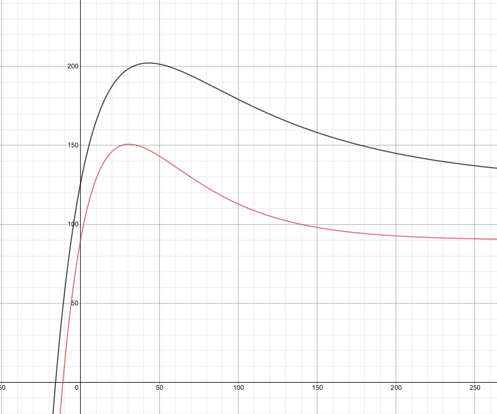

American Airlines offers a diabetic meal option, so be sure to inform the flight staff of your conditions!
"Special meals to meet specific dietary, medical and religious needs are available on select flights. To make sure we can accommodate your needs, request your meal at least 24 hours before takeoff." - American Airlines
American Airlines support number: (800) 433-7300 and website.
Although State Farm doesn't ask about your blood sugar levels, it is important to note that you do have to send them a record of your medical background to get life insurance.
By knowing your blood sugar levels now and in the future, you can plan your schedule both insulin treatments and work.
Keeping your blood sugar levels below 120 mg/dL prevents any changes to your physiology.
Remember that 9% of Americans have diabetes, so don't feel ashamed to admit your diabetic condition to those around you!
Diabetes type 2 is due to poor diet choices while type 1 is due to an unlucky autoimmune attack on the pancreas.
If you want help in administering your insulin injections, please contact your doctor since hypoglycemia is a common result from having too much insulin and can result in death.
I know that the graphs generated look the same, but they really are different! Here is a graph that compares a diabetic to a non-diabetic:

If you want to see the mathematical equation I used, here it is: